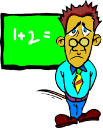

|  |
If you were solving AlgPoW problems from the Math Forum in the year 2001, and in particular the one titled "The Professors' Primes", (May 7) you met three of my favorite university professors: Drs. Ken Travers, Peter Braunfeld, and Wilson Zaring. Before I left them to finish their lunch in the cafeteria that day, I inquired as to what their ages would be when students would be returning to school for next year (September, 2001). They were kind enough to oblige; hence I have some data for this problem you are about to work now.Upon careful examination of their three ages, I have formulated the four following facts. I am using the initial letter from each man's first name to represent his age, respectively.
- 60 < K < P < W < 80
- The sum of the older two professors' ages is a square number.
- The sum of the oldest and youngest professors' ages is the first palindrome less than the square.
- The sum of the younger two professors' ages is the 2nd prime less than the palindrome (of statement #3).
With that information, give me the "digit sum" of the product of the three professors' ages.
NOTE: show enough steps of work so that any reader can follow your reasoning easily. The variables for your equations are already given, but restate them for clarity as part of your solution process.
BONUS: What is the "digital root" of the product of the three professors' ages?
Before you try writing up your solution, it is highly recommended that you check out the Guidelines for Writing PoW Answers.
You may send your answers via email to me at: ttrotter@telesal.net or ttrotter3@yahoo.com. Or click on the icon below.
| Comments? Send e-mail. | Back to top | Go back to Home Page | Go back to Contents |